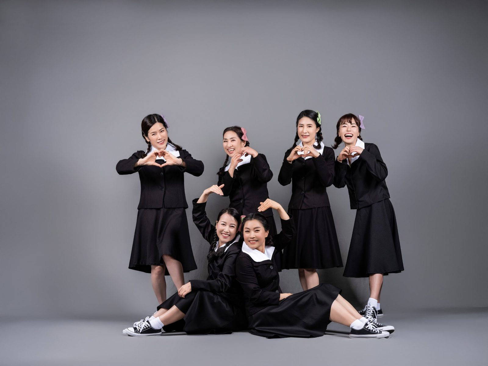

오래된 친구와 사진을 남기는 일은, 그날 하루를 남기는 일이 아닙니다. 그때까지 함께 지나온 시간을 한 장에 담는 일입니다. 창원 우정사진은 그래서 옷을 맞춰 입고, 웃을 준비를 하는 촬영입니다.
창원에서 우정사진을 찾으시는 분들은 대부분 동창회, 친구 모임, 동호회, 오래 다닌 모임입니다. 상남동 롯데빌딩 2층 사랑이야기 스튜디오 창원점에는 의상실과 메이크업실이 함께 있어서, 모여서 옷 고르고 준비하고 한 번에 찍고 나가실 수 있습니다.
이런 모임이 오십니다
동창회 — 졸업 연도를 맞춰 오시고, 같은 교복이나 체육복 컨셉으로 찍으시기도 합니다.
평생친구 — 십수 년을 함께한 친구끼리. 드레스와 화관을 맞춰 입으면 완전히 다른 장면이 됩니다.
동호회·계모임 — 활동한 시간만큼 인원이 많은 모임. 단체 컷과 소그룹 컷을 나눠 찍습니다.
고향 친구·가족 같은 사이 — 친척처럼 지내는 분들끼리 오시는 촬영도 있습니다.
어떻게 찍는지
단체사진에서 가장 잘 나오는 순간은 줄을 맞춘 순간이 아니라, 서로를 보고 웃는 순간입니다. 저는 자리를 먼저 잡아 드리고, 그다음에는 대화를 이어 갑니다. 누가 무슨 말을 했는지는 사진에 남지 않지만, 그 표정은 남습니다.
의상은 같은 색 계열로 맞추면 사진이 정돈됩니다. 테마를 정하면 표정이 훨씬 편해집니다 — 복고 교복, 드레스와 화관, 한복처럼 하나를 골라 보세요. 어떻게 할지 정하지 못하셨으면 상담 때 사진을 보면서 함께 정합니다.

자주 묻는 질문
Q. 몇 명부터 찍을 수 있나요?
A. 인원 제한은 두지 않습니다. 두 사람이 오시기도 하고, 동창회처럼 열 명 넘게 오시기도 합니다. 인원이 많으면 상담 때 구도와 순서를 미리 정해 두고 진행합니다.
Q. 의상은 어떻게 준비하나요?
A. 창원점 의상실에 드레스·정장·한복과 소품이 있습니다. 같은 색 계열로 맞춰 입으면 사진이 정돈되고, 복고 교복처럼 테마를 정하면 표정이 훨씬 편해집니다.
Q. 친구들끼리 대화하듯 찍고 싶습니다.
A. 그렇게 찍습니다. 단체사진은 줄 맞춰 서는 것보다 서로 이야기하는 순간이 더 잘 나옵니다. 저희가 순서를 안내하면서 자연스러운 장면을 이어 갑니다.
Q. 촬영 시간은 얼마나 걸리나요?
A. 인원과 의상 수에 따라 달라지므로 상담 때 시간을 정해 드립니다. 준비 시간을 포함해 여유 있게 예약해 주시면 서두르지 않고 찍을 수 있습니다.
다른 촬영 안내

오시는 곳
사랑이야기창원점
- 주소 경남 창원시 성산구 원이대로 652, 상남동 롯데빌딩 2층
- 전화 055-287-8022
- 영업시간 오전 10:00 ~ 오후 7:00
- 예약 전화 상담 · 카카오톡 채널
- 주차 건물 지하 주차장
김작가사진이야기 의령
- 주소 경남 의령군 궁류면 청정로 1188
- 전화 055-574-3706
- 영업시간 오전 10:00 ~ 오후 7:00
- 예약 전화 상담 · 카카오톡 채널
- 주차 전용 주차장